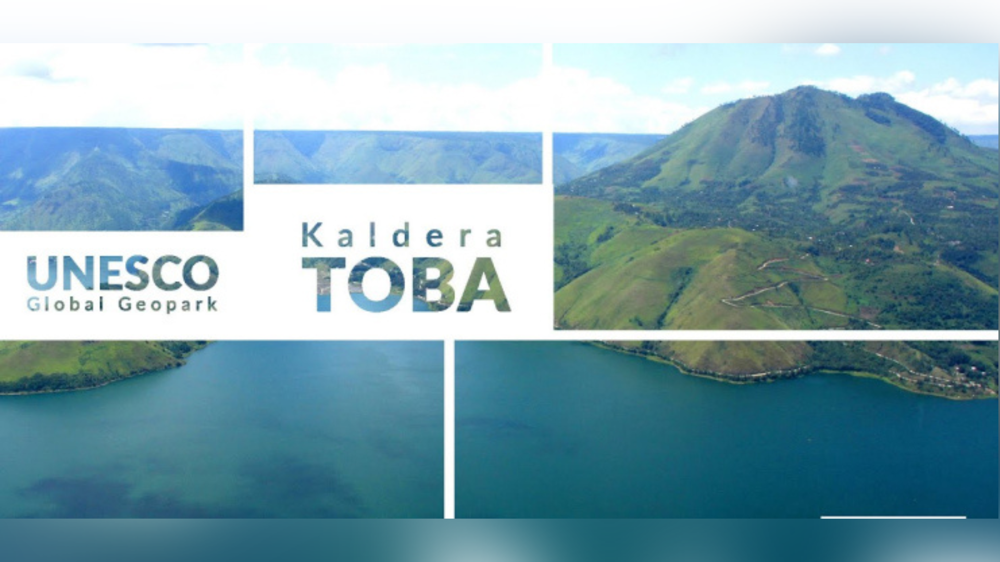

UNESCO menyepakati Kaldera Toba sebagai UNESCO Global Geopark
Paris, 7 Juli 2020: Dewan Eksekutif UNESCO menyepakati Kaldera Toba ditetapkan sebagai UNESCO
Global Geopark (7/07). Pada Sidang ke-209 Dewan Eksekutif UNESCO hari ini di Paris, anggota Dewan Eksekutif
menetapkan 16 UNESCO Global Geopark baru, termasuk Kaldera Toba.

FRS (Festival Raja Sisingamangaraja) di Sipinsur
FRS (Festival Raja Sisingamangaraja) ini digelar di Sipinsur, sesuai dengan hasil rapat yang
dipimpin Sekdakab Humbahas Drs Tonny Sihombing yang diikuti Asisten Administrasi Umum Janter Sinaga,
Wakapolres
Humbahas Kompol D Pinem, Pabung 0210/TU Mayor Inf Ojak Simarmata, pimpinan OPD, Camat Baktiraja bersama
Kepala Desa,
Camat Paranginan bersama Kepala Desa Pearung, LADN, tokoh agama, tokoh adat Sionom Ompu dari Baktiraja,
pegiat
wisata Baktiraja Swandy Lumbangaol dan event organizer, Senin (25/7) di Kantor Bupati Humbahas

Kejuaraan Dunia F1 Powerboat (F1H20) pada 24-26 Februari 2023 di Danau Toba Sumater Utara.
Menteri Pemuda dan Olahraga Zainudin Amali mengungkapkan, Danau Toba dipercaya untuk menjadi tuan rumah F1
Powerboat selama lima tahun hingga 2027.
Pemerintah Provinsi Sumatera Utara melalui Dinas Kebudayaan dan Pariwisata Provsu
bekerjasama
dengan Kementerian Pariwisata RI, Badan Otorita Danau Toba dan 8 Kabupaten di kawasan Danau Toba serta
para
stakeholder pariwisata dan budaya akan menyelenggarakan Festival Danau Toba Tahun 2019 di Parapat
Kabupaten
Simalungun tepatnya di pinggiran Danau Toba 9-12 September 2019 mendatang.